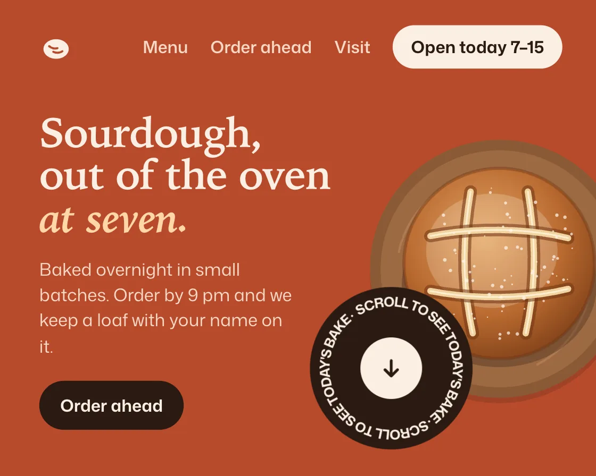

Text on a circle
Text on a circle is a DOM effect: text on an SVG circle turns, easing toward a target speed. One plain JavaScript file with no dependencies; add it with npx motion-library add text-circle.

Open it live, tune it and copy the code
What is Text on a circle?
A ring of text turns slowly around an arrow, sometimes spinning up; hover to spin it yourself.
How does Text on a circle work?
The text runs along an SVG circle with textPath, stretched to fit exactly, and its speed eases toward a target, so it never jerks.
How do I add Text on a circle to my website?
- In your project folder, run
npx motion-library add text-circle. It writesanimations/text-circle.js. Needs Node 18 or newer. - Import it and call it with a container element that has a size:
import fx from './animations/text-circle.js'; const stop = fx(document.querySelector('#hero')); - Call
stop()to clean up, for example when a component unmounts.
Every setting below is also a flag, so you can install it already tuned: npx motion-library add text-circle --speed 90.
What settings can I tweak?
| Setting | Flag | Default | Range | Step |
|---|---|---|---|---|
| Speed (°/s) | --speed | 18 | 0 to 90 | 1 |
| Boost | --boost | 6 | 1 to 15 | 0.5 |
| Nudge every (ms) | --every | 3200 | 1000 to 8000 | 100 |
Specifications
- Renderer
- DOM (CSS and the Web Animations API)
- Category
- Text
- Dependencies
- None
- File size
- 11.8 KB, unminified
- Interactive
- Yes: it responds to the pointer
- Reduced motion
- Respects prefers-reduced-motion
- Licence
- MIT-0: use it anywhere, no credit needed
Source code
// Text on a circle, on a bakery's landing page: a "scroll to see today's bake" badge turns slowly around a centre arrow, and every few seconds the arrow nudges down while the ring spins up and coasts back.
// Text set on a circle has no start or end, so a slow, constant turn reads as alive without asking to be read; the occasional push gives the badge a reason to be looked at, and the speed eases in and out so it never jerks. Hover it to spin it up yourself.
const PARAMS = { speed: 18, boost: 6, every: 3200 };
export default function (stage) {
const reduce = matchMedia('(prefers-reduced-motion: reduce)').matches;
const AH = 340, MINW = 400, R = 44;
const label = "SCROLL TO SEE TODAY'S BAKE · SCROLL TO SEE TODAY'S BAKE · ";
const root = document.createElement('div');
root.className = 'tc-root';
root.innerHTML = `<style>
.tc-root { position: absolute; inset: 0; overflow: hidden; background: #b84a2b; color: #fbefe3; font-family: "Mona Sans", system-ui, -apple-system, sans-serif; }
.tc-art { position: absolute; left: 0; top: 0; height: ${AH}px; transform-origin: 0 0; }
.tc-nav { position: absolute; left: 28px; right: 24px; top: 18px; display: flex; align-items: center; gap: 16px; font-size: 12px; font-weight: 560; color: #f6d9c6; }
.tc-nav svg { width: 24px; height: 24px; margin-right: auto; }
.tc-nav b { font-weight: 640; color: #2b1a12; background: #fbefe3; padding: 7px 13px; border-radius: 999px; }
.tc-copy { position: absolute; left: 28px; top: 80px; }
.tc-copy h2 { margin: 0; font: 600 38px/1.02 ui-serif, "Iowan Old Style", Georgia, serif; letter-spacing: -0.02em; }
.tc-copy h2 em { font-style: italic; color: #ffd6a8; }
.tc-copy p { margin: 12px 0 16px; max-width: 220px; font-size: 12.5px; line-height: 1.45; color: #f6d9c6; }
.tc-copy span { display: inline-block; padding: 9px 15px; border-radius: 999px; background: #2b1a12; color: #fbefe3; font-size: 12px; font-weight: 640; }
.tc-copy small { margin-left: 12px; white-space: nowrap; font-size: 11px; color: #f0c7ae; }
.tc-loaf { position: absolute; }
.tc-badge { position: absolute; width: ${2 * R + 30}px; height: ${2 * R + 30}px; cursor: pointer; }
.tc-ring { position: absolute; inset: 0; will-change: transform; }
.tc-ring text { font: 700 9.6px "Mona Sans", system-ui, sans-serif; letter-spacing: .14em; fill: #fbefe3; }
.tc-core { position: absolute; left: 50%; top: 50%; width: 44px; height: 44px; margin: -22px; border-radius: 50%; background: #fbefe3; display: grid; place-items: center; }
.tc-core svg { width: 18px; height: 18px; }
</style>
<div class="tc-art">
<div class="tc-nav"><svg viewBox="0 0 24 24" aria-hidden="true"><ellipse cx="12" cy="13" rx="9" ry="7" fill="#fbefe3"/><path d="M7 11c2 1.6 4 2 6 1.4M10 15c2 1 4.5 1 6.5-.4" stroke="#b84a2b" stroke-width="1.5" fill="none" stroke-linecap="round"/></svg><span>Menu</span><span>Order ahead</span><span>Visit</span><b>Open today 7–15</b></div>
<div class="tc-copy"><h2>Sourdough,<br>out of the oven<br><em>at seven.</em></h2><p>Baked overnight in small batches. Order by 9 pm and we keep a loaf with your name on it.</p><span>Order ahead</span><small>14 Harbour Street · Tue–Sun</small></div>
<svg class="tc-loaf" viewBox="0 0 270 270" aria-hidden="true">
<defs><radialGradient id="tc-crust" cx=".42" cy=".36" r=".7"><stop offset="0" stop-color="#e3a463"/><stop offset=".6" stop-color="#b8692f"/><stop offset="1" stop-color="#7e3f19"/></radialGradient></defs>
<circle cx="135" cy="140" r="122" fill="#2b1a12" opacity=".18"/><circle cx="135" cy="135" r="122" fill="#8b5a36"/><circle cx="135" cy="135" r="112" fill="#9d6a42"/>
<path d="M40 120a95 95 0 0 1 60-70M220 160a95 95 0 0 1-50 66" stroke="#b07a50" stroke-width="2" fill="none"/>
<ellipse cx="135" cy="150" rx="92" ry="78" fill="#2b1a12" opacity=".3"/>
<circle cx="135" cy="130" r="90" fill="url(#tc-crust)"/>
<circle cx="135" cy="130" r="90" fill="none" stroke="#6e3313" stroke-width="3" opacity=".4"/>
<ellipse cx="128" cy="118" rx="62" ry="54" fill="#fff4e2" opacity=".22"/>
<path d="M108 62 C 100 110, 100 150, 110 196" stroke="#6e3313" stroke-width="12" fill="none" stroke-linecap="round" opacity=".55"/><path d="M108 62 C 100 110, 100 150, 110 196" stroke="#f1d3a0" stroke-width="6" fill="none" stroke-linecap="round"/><path d="M108 62 C 100 110, 100 150, 110 196" stroke="#fff3dc" stroke-width="1.6" fill="none" stroke-linecap="round" opacity=".8"/><path d="M162 62 C 170 110, 170 150, 160 196" stroke="#6e3313" stroke-width="12" fill="none" stroke-linecap="round" opacity=".55"/><path d="M162 62 C 170 110, 170 150, 160 196" stroke="#f1d3a0" stroke-width="6" fill="none" stroke-linecap="round"/><path d="M162 62 C 170 110, 170 150, 160 196" stroke="#fff3dc" stroke-width="1.6" fill="none" stroke-linecap="round" opacity=".8"/><path d="M70 104 C 110 96, 160 96, 200 106" stroke="#6e3313" stroke-width="12" fill="none" stroke-linecap="round" opacity=".55"/><path d="M70 104 C 110 96, 160 96, 200 106" stroke="#f1d3a0" stroke-width="6" fill="none" stroke-linecap="round"/><path d="M70 104 C 110 96, 160 96, 200 106" stroke="#fff3dc" stroke-width="1.6" fill="none" stroke-linecap="round" opacity=".8"/><path d="M70 156 C 110 164, 160 164, 200 154" stroke="#6e3313" stroke-width="12" fill="none" stroke-linecap="round" opacity=".55"/><path d="M70 156 C 110 164, 160 164, 200 154" stroke="#f1d3a0" stroke-width="6" fill="none" stroke-linecap="round"/><path d="M70 156 C 110 164, 160 164, 200 154" stroke="#fff3dc" stroke-width="1.6" fill="none" stroke-linecap="round" opacity=".8"/>
<g fill="#fff8ee" opacity=".7"><circle cx="137.3" cy="152.0" r="1.6"/><circle cx="110.0" cy="146.2" r="1.3"/><circle cx="181.3" cy="147.5" r="1.5"/><circle cx="197.3" cy="97.2" r="1.4"/><circle cx="138.6" cy="95.2" r="1.1"/><circle cx="94.0" cy="120.4" r="0.7"/><circle cx="147.2" cy="149.7" r="0.8"/><circle cx="152.1" cy="196.6" r="1.6"/><circle cx="169.2" cy="72.1" r="1.6"/><circle cx="146.0" cy="98.9" r="1.6"/><circle cx="111.7" cy="182.0" r="1.0"/><circle cx="126.6" cy="62.9" r="1.3"/><circle cx="152.2" cy="114.5" r="1.5"/><circle cx="83.4" cy="92.6" r="1.3"/><circle cx="101.3" cy="127.9" r="1.5"/><circle cx="111.4" cy="132.6" r="1.2"/><circle cx="203.2" cy="102.2" r="1.3"/><circle cx="93.1" cy="117.4" r="1.4"/><circle cx="185.9" cy="99.5" r="0.9"/><circle cx="189.4" cy="84.3" r="1.6"/><circle cx="83.6" cy="126.6" r="1.7"/><circle cx="92.3" cy="101.5" r="0.7"/><circle cx="158.4" cy="162.8" r="1.7"/><circle cx="141.4" cy="115.2" r="1.7"/><circle cx="195.7" cy="145.4" r="1.3"/><circle cx="123.9" cy="180.7" r="0.6"/><circle cx="88.9" cy="136.6" r="1.6"/><circle cx="170.4" cy="128.4" r="0.7"/><circle cx="104.3" cy="145.9" r="1.7"/><circle cx="106.7" cy="101.0" r="1.3"/><circle cx="92.3" cy="178.0" r="0.7"/><circle cx="109.3" cy="177.6" r="0.8"/><circle cx="156.0" cy="116.1" r="1.3"/><circle cx="170.4" cy="142.0" r="1.2"/><circle cx="141.0" cy="72.8" r="1.4"/><circle cx="138.6" cy="170.3" r="1.6"/><circle cx="158.8" cy="172.8" r="0.8"/><circle cx="199.4" cy="145.0" r="0.6"/><circle cx="197.0" cy="86.2" r="1.6"/><circle cx="127.6" cy="58.8" r="0.6"/><circle cx="177.7" cy="133.4" r="1.6"/><circle cx="203.8" cy="115.6" r="0.7"/><circle cx="69.3" cy="166.3" r="1.5"/><circle cx="82.4" cy="84.3" r="1.5"/><circle cx="125.6" cy="159.3" r="1.6"/><circle cx="107.3" cy="138.1" r="1.2"/><circle cx="77.3" cy="176.8" r="1.6"/><circle cx="131.2" cy="135.1" r="0.8"/><circle cx="166.6" cy="137.2" r="1.3"/><circle cx="145.1" cy="86.6" r="1.0"/><circle cx="128.8" cy="150.7" r="1.6"/><circle cx="186.7" cy="123.6" r="1.5"/><circle cx="140.1" cy="145.9" r="1.1"/><circle cx="165.9" cy="139.1" r="1.2"/><circle cx="121.3" cy="104.0" r="0.6"/><circle cx="189.2" cy="141.8" r="0.6"/><circle cx="135.5" cy="200.9" r="1.3"/><circle cx="176.9" cy="165.4" r="1.1"/><circle cx="142.6" cy="83.4" r="1.6"/><circle cx="190.1" cy="125.1" r="1.3"/><circle cx="137.6" cy="175.1" r="0.8"/><circle cx="185.5" cy="139.7" r="1.0"/><circle cx="135.7" cy="196.9" r="1.4"/><circle cx="162.5" cy="84.6" r="1.2"/><circle cx="174.6" cy="136.2" r="0.6"/><circle cx="136.7" cy="161.8" r="1.5"/><circle cx="143.7" cy="195.7" r="1.5"/><circle cx="146.4" cy="141.7" r="0.7"/><circle cx="189.1" cy="105.3" r="1.2"/><circle cx="185.7" cy="126.3" r="1.0"/></g>
</svg>
<div class="tc-badge" role="img" aria-label="Scroll to see today's bake">
<svg class="tc-ring" viewBox="0 0 ${2 * R + 30} ${2 * R + 30}"><circle cx="${R + 15}" cy="${R + 15}" r="${R + 14}" fill="#2b1a12"/><path id="tc-path" d="M ${R + 15},${R + 15} m -${R},0 a ${R},${R} 0 1,1 ${2 * R},0 a ${R},${R} 0 1,1 -${2 * R},0" fill="none"/><text><textPath href="#tc-path" textLength="${(2 * Math.PI * R - 2).toFixed(1)}" lengthAdjust="spacing">${label}</textPath></text></svg>
<div class="tc-core"><svg viewBox="0 0 18 18" aria-hidden="true"><path class="tc-arrow" d="M9 3v11M4.5 9.5 9 14l4.5-4.5" fill="none" stroke="#2b1a12" stroke-width="2" stroke-linecap="round" stroke-linejoin="round"/></svg></div>
</div>
</div>`;
stage.append(root);
const art = root.querySelector('.tc-art'), badge = root.querySelector('.tc-badge'), ring = root.querySelector('.tc-ring');
const arrow = root.querySelector('.tc-core svg'), loaf = root.querySelector('.tc-loaf'), copy = root.querySelector('.tc-copy');
const fit = () => {
const W = stage.clientWidth, H = stage.clientHeight, s = Math.min(H / AH, W / MINW) || 1, aw = W / s;
art.style.width = aw + 'px'; art.style.top = (H - AH * s) / 2 + 'px'; art.style.transform = `scale(${s})`;
// the loaf shrinks and slides right on narrow stages so it never covers the headline; the badge rides on its lower-left edge
const L = Math.max(190, Math.min(270, aw * 0.48)), left = aw + L * 0.16 - L;
loaf.style.width = loaf.style.height = L + 'px'; loaf.style.left = left + 'px'; loaf.style.right = 'auto'; loaf.style.top = (AH - L) / 2 + 22 + 'px';
const bx = left - 34, by = (AH - L) / 2 + 22 + L * 0.56;
badge.style.left = bx + 'px'; badge.style.top = by + 'px';
const cw = left - 28 - 8;
copy.style.width = cw + 'px'; copy.querySelector('h2').style.fontSize = Math.min(40, cw / 7.3).toFixed(1) + 'px';
copy.querySelector('small').style.display = cw < 280 ? 'none' : '';
copy.querySelector('p').style.maxWidth = Math.min(230, bx - 28 - 10) + 'px';
};
const ro = new ResizeObserver(fit); ro.observe(stage); fit();
let angle = 0, speed = PARAMS.speed, hover = false, pulse = -1e9, last = performance.now(), raf, timer;
const easeInOut = 'cubic-bezier(0.77, 0, 0.175, 1)';
const nudge = () => {
pulse = performance.now();
arrow.animate(reduce ? [{ opacity: 1 }, { opacity: 0.35 }, { opacity: 1 }] : [{ transform: 'none' }, { transform: 'translateY(5px)' }, { transform: 'none' }, { transform: 'translateY(3px)' }, { transform: 'none' }], { duration: 1100, easing: easeInOut });
timer = setTimeout(nudge, PARAMS.every);
};
badge.addEventListener('pointerenter', () => { hover = true; });
badge.addEventListener('pointerleave', () => { hover = false; });
function frame(now) {
const dt = Math.min(0.05, (now - last) / 1000); last = now;
// target speed: the base turn, raised by hover or by the nudge, which swells and fades over about a second and a half
const since = (now - pulse) / 1000, swell = since >= 0 && since < 1.6 ? Math.sin(Math.PI * Math.min(1, since / 1.6)) ** 2 : 0;
const target = PARAMS.speed * (1 + (PARAMS.boost - 1) * Math.max(hover ? 1 : 0, swell));
speed += (target - speed) * Math.min(1, dt * 4);
if (!reduce) angle = (angle + speed * dt) % 360; // reduced motion: the ring holds still
ring.style.transform = `rotate(${angle.toFixed(2)}deg)`;
raf = requestAnimationFrame(frame);
}
timer = setTimeout(nudge, 1200);
raf = requestAnimationFrame(frame);
return () => { cancelAnimationFrame(raf); clearTimeout(timer); ro.disconnect(); root.getAnimations({ subtree: true }).forEach(a => a.cancel()); root.remove(); };
}